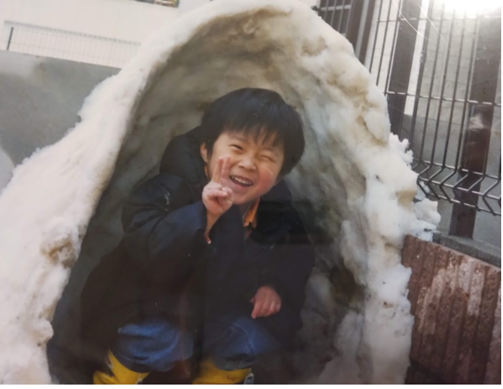

自己紹介
名前：山田悠人
① 出身地：千葉県
茨城県生まれ、千葉県育ちです。
② 名前の由来
悠人という名前には、「物事に動じず、悠々と人生を歩むことができる人」になってほしいとという願いが込められているそうです。
③ 趣味：バドミントン
私が中高時代に行っていたスポーツはバドミントンです。
中学時代は強豪ではなかったので、練習に行かずにサボっていた時期がありました。しかし中三の時に校内試合が行われ、30人中２位でした。
自分の才能に気づき、高校でも続け、副キャプテンとしてチームを率いました。
努力の結果、弱小校でしたが団体戦で東京ベスト１６に入ることができました。
今でも趣味としてバドミントンを続けています。たまに大学のバドミントンサークルに行ったり、高校の同期と打ってます。
④ 座右の銘：石橋を叩いて渡る
用心の上にもさらに用心を重ねて、慎重に物事を行うという意味です。
周りの人も自分と同じように色々考えて生きている人間です。それに気づいたものは必然的に勝負の場で相手のことを見くびらないようになります。
自分と同じように相手も考えていないか、頑張っていないか。相手の能力や事情をちゃんと見るようになる。相手に対し、敬意をもって警戒できる人はすきがありません。
このことわざは、すきがない人になるためにぴったりの言葉だと思います。
⑤ 強み：負けず嫌い
私は負けず嫌いなので、競争心が強く、とにかく負けたくないという気持ちが人一倍強いです。
しかし、私はまだ負けず嫌いの度合いが足りないと思っています。
最近、人よりも長くサウナにいれるか、勝手に競争しています。しかし、途中でばてて、諦めてしまいます。そして、自分の心の弱さに絶望しています。
⑥ 今年の抱負：大学の専門の勉強を真剣に取り組む
将来、専門科目を生かした職業に就きたいと考えています。そのため、今学んでいる電磁気や電気回路、数学に真摯に取り組もうと考えています。
大学生は表面上しか勉強していない学生がほとんどです。なので、本質を突いた勉強をすることで、希少価値が生まれます。
AI、プログラミング、ロボット、EV、エネルギーは今ホットな話題です。幸いなことに、これらの分野は全て電気電子情報工学科と密接に関わっています。
つまり、今学校で勉強している内容をしっかり勉強すれば、時代の最先端に携わることが可能になります。
これらの専門科目と英語を組み合わせると最強です。これらの知識で、世界を変えたいと思います。
好きなYoutuberと嫌いなYoutuber
好きなYoutuber
- HikakinTV
- レペゼン地球
- ブライアン
嫌いなYotuber
- 東海オンエア
- Junya
- フィッシャーズ